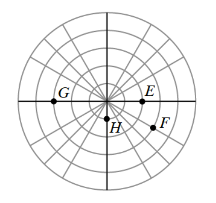

Plot the following polar coordinate points on polar graph paper.
\(A=\left(1,\frac{\pi}{2}\right)\qquad B=(-2,\pi)\qquad C=\left(-1,-\frac{\pi}{4}\right)\qquad D=\left(1,-\frac{3\pi}{2}\right)\)
Write the polar coordinates of the points shown on the graph. Use graph.

Recall the definition \(i=\sqrt{-1}\). Simplify the following expressions.
\(\sqrt{-16}\)
\(\sqrt{-49}\)
\(5\cdot\sqrt{-9}\)
\(\frac{\sqrt{-12}}{-4}\)
Write the equation of the inverse for each function below.
\(f(x)=\frac{x+1}{3}\)
\(g(x)=\frac{11x+5}{2}\)
Sketch the graph of \(f(x)=-(x+4)^2(x)(x-2)^2(x-3)\) without using a graphing calculator. Do not scale your axes, but be sure to label the important points.
Graph \(g(x)=\frac{3}{x-2}\).
Analyze the graph of \(y=g(x)\) and complete the following statements:
\(\lim\limits_{x\to\infty} g(x)=\underline{\hspace{1.5cm}}\qquad \lim\limits_{x\to-\infty} g(x)=\underline{\hspace{1.5cm}}\)
Record both of these limit statements next to your graph.
Rewrite \(g(x)\) as transformation of the parent curve \(y=\frac{1}{x}\). How does this form of the equation relate to your answers to part (a)?
Solve each equation.
\(\log_5(2y)=3\)
\(\log_4(x+1)=-1\)
\(\log_2(4)-\log_2(3)=2\)
\(2\log_3(6)+\log_3(y)=4\)
Graph each of the following equations. State all of the key information, such as the locations of the foci and/or the equations of any asymptotes.
\(x^2-y^2=9\)
\(\frac{(x-5)^2}{16}+\frac{(y+2)^2}{9}=1\)